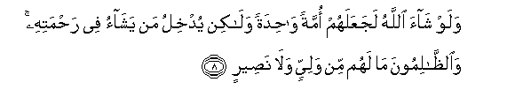

Sacred Texts Islam Index
Hypertext Qur'an Unicode Palmer Pickthall Yusuf Ali English Rodwell
Sūra XLII.: Shūrā, or Consultation. Index
Previous Next

The Holy Quran, tr. by Yusuf Ali, [1934], at sacred-texts.com
Sūra XLII.: Shūrā, or Consultation.
Section 1
1. Hā-Mīm;
2. ‘Ain. Sīn. Kāf.
3. Kathalika yoohee ilayka wa-ila allatheena min qablika Allahu alAAazeezu alhakeemu
3. Thus doth (He) send
Inspiration to thee
As (He did) to those before thee,—
God, Exalted in Power,
Full of Wisdom.
4. Lahu ma fee alssamawati wama fee al-ardi wahuwa alAAaliyyu alAAatheemu
4. To Him belongs all
That is in the heavens
And on earth: and He
Is Most High, Most Great.
5. Takadu alssamawatu yatafattarna min fawqihinna waalmala-ikatu yusabbihoona bihamdi rabbihim wayastaghfiroona liman fee al-ardi ala inna Allaha huwa alghafooru alrraheemu
5. The heavens are almost
Rent asunder from above them
(By His Glory):
And the angels celebrate
The Praises of their Lord,
And pray for forgiveness
For (all) beings on earth:
Behold! Verily God is He,
The Oft-Forgiving,
Most Merciful.
6. Waallatheena ittakhathoo min doonihi awliyaa Allahu hafeethun AAalayhim wama anta AAalayhim biwakeelin
6. And those who take
As protectors others besides
Him,—
God doth watch over them;
And thou art not
The disposer of their affairs.
7. Wakathalika awhayna ilayka qur-anan AAarabiyyan litunthira omma alqura waman hawlaha watunthira yawma aljamAAi la rayba feehi fareequn fee aljannati wafareequn fee alssaAAeeri
7. Thus have We sent
By inspiration to thee
An Arabic Qur-ān:
That thou mayest warn
The Mother of Cities
And all around her,—
And warn (them) of
The Day of Assembly,
Of which there is no doubt:
(When) some will be
In the Garden, and some
In the Blazing Fire.

8. Walaw shaa Allahu lajaAAalahum ommatan wahidatan walakin yudkhilu man yashao fee rahmatihi waalththalimoona ma lahum min waliyyin wala naseerin
8. If God had so willed,
He could have made them
A single people; but He
Admits whom He will
To His Mercy;
And the wrong-doers
Will have no protector
Nor helper.
9. Ami ittakhathoo min doonihi awliyaa faAllahu huwa alwaliyyu wahuwa yuhyee almawta wahuwa AAala kulli shay-in qadeerun
9. What! Have they taken
(For worship) protectors
Besides Him? But it is
God,—He is the Protector,
And it is He Who
Gives life to the dead:
It is He Who has power
Over all things.